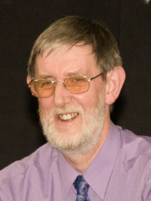

Committee
Member Profile
|
Vice-President Allan Child Allan joined Derby RMS (as the Jubilee Music Circle was then known) in 1965 and was for many years its Secretary until a combination of Covid and declining membership brought about its closure. Having previously served as FRMS Chairman he resumed the rôle in an acting capacity in 2013 and was elected to the position the following year. He stepped down in 2023. His musical tastes are varied and have been broadened through recorded music society membership. He presents programmes not only to Wollaton RMS, where he is currently a member, but to other societies, and relishes the challenge of devising programmes that are both enjoyable and informative. Apart from his musical interests he has found plenty to occupy his retirement. He enjoys travel (preferably by train), solving and setting cryptic crosswords (he has had a few published on crossword websites), cooking and language study, speaking French, German, Spanish and Welsh - though not claiming great fluency in any of them. |
 |